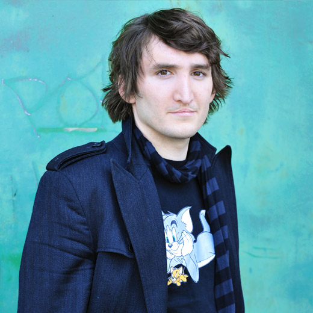

News
Filme
- Und wenn sie doch gestorben wäre (Post-Produktion)
- Mein Berfin (Post-Produktion)
- Fast Vier Mal (Post-Produktion)
Und also Co-Produktion
Sivas von Kaan Müjdeci
Kurzsynopsis
Die Tragikomödie “LUKS GLÜCK“ erzählt die Geschichte des 27 jährigen, erfolglosen und nervösen Glücksuchers Luk, der nach einem Lottogewinn sein Leben ändern möchte. Luk, der immer ein Anderer werden wollte, um glücklich zu sein, muss erkennen, dass er zuerst herausfinden muss, wer er ist, um sich und somit sein Leben ändern zu können.
LUKS GLÜCK wird produziert von PunktPunktPunkt Filmproduktion
Berlin und Intervista Digital Media Hamburg und dem ZDF
"Das kleine Fernsehspiel"
Redaktion: Claudia Tronnier. Wir bedanken uns bei den Filmförderen
Hamburg Schleswig-Holstein GmbH, Nordmedia und der FFA!
Gedreht wird Mitte Mai bis Mitte Juli 2009 in Hamburg, Niedersachsen, Istanbul und Kappadokien.
CAST "Luks Glück":
Hauptdarsteller (LUK): René Vaziri/ Hauptdarstellerin (GÜL): Aylin Tezel
